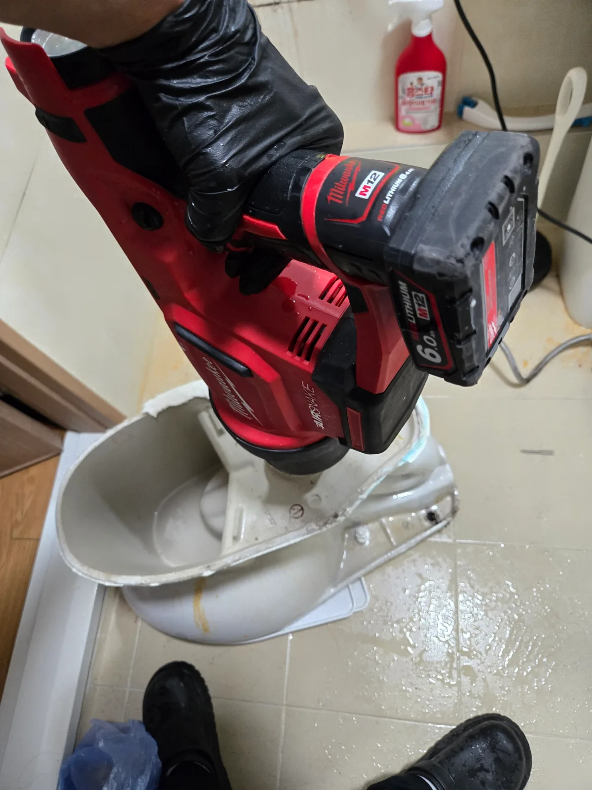

강남구 도곡동 변기막힘, 현장 도착 후 진단
강남구 도곡동 오피스텔에서 변기에 짬뽕을 버린 후 물이 역류한다는 긴급 연락을 받고 신라건축설비가 전문 장비를 준비해 신속하게 출동했습니다. 현장에 도착했을 때 변기 주변에는 역류한 짬뽕 국물과 음식물 흔적이 남아 있었습니다.
변기막혔을때 음식물이 들어간 사실을 모르고 계속 물을 내리면 오수가 넘쳐 화장실 바닥까지 오염될 수 있습니다. 먼저 추가적인 물 사용을 중단하고 변기 내부와 하부 오수관 중 어느 구간이 막혔는지 점검했습니다.
짬뽕처럼 면과 건더기가 섞인 음식물은 변기의 굴곡진 내부 배관에 뭉쳐 걸릴 수 있습니다. 이번 도곡동 변기막힘도 단순한 휴지막힘과 달리 변기를 탈거해 내부를 직접 작업해야 하는 상황이었습니다.
1단계: 증상 확인과 필요한 장비 작업
변기 주변의 오염 상태를 정리하고 바닥을 보양한 뒤 변기 고정부와 연결 부위를 분리했습니다. 변기를 안전하게 탈거하고 하부 오수관을 확인한 결과 막힘 원인은 건물 오수관이 아니라 변기 자체의 내부 배관에 있었습니다.
신라건축설비는 변기막힘 원인을 확인하지 않은 채 무리하게 관통작업을 반복하지 않습니다. 오수관 상태와 변기 내부를 구분해 점검한 뒤 음식물이 걸린 변기에 맞는 에어스네이크 작업을 진행했습니다.

2단계: 원인 구간 처리와 정상 작동 확인
탈거한 변기 하부 배출구에 밀워키 에어스네이크를 밀착시켜 압력을 분사했습니다. 변기 내부 굴곡에 뭉쳐 있던 짬뽕 면과 음식물 건더기가 빠져나갈 수 있도록 방향과 압력을 조절하며 작업했습니다.
음식물 찌꺼기를 제거한 뒤 변기 내부에 남은 이물질이 없는지 확인하고 원래 위치에 다시 설치했습니다. 여러 차례 물을 내려 통수시험을 진행한 결과 변기 물이 막힘 없이 시원하게 내려가고 변기역류가 해소됐습니다.

작업 결과와 재발 방지 안내
강남구 도곡동 오피스텔 변기막힘은 짬뽕 국물과 함께 버려진 면과 음식물 건더기가 원인이었습니다. 변기 탈거 후 밀워키 에어스네이크로 내부 이물질을 제거해 변기의 배수 기능을 정상화했습니다.
변기는 음식물 분쇄기나 하수구가 아닙니다. 짬뽕과 라면, 국밥, 마라탕처럼 면과 고기, 채소가 섞인 음식물을 변기에 버리면 내부 굴곡에 걸려 심한 변기막힘과 변기역류를 일으킬 수 있습니다. 국물은 싱크대 거름망을 이용하고 음식물 건더기는 반드시 음식물쓰레기로 분리해야 합니다.
신라건축설비는 일반적인 휴지막힘부터 음식물 변기막힘, 변기 탈거, 에어스네이크 작업과 오수관막힘까지 대응합니다. 작은 생활 배관 문제부터 오피스텔·상가·대형건물의 공용배관막힘과 배관공사까지 가능한 막힘 전문업체입니다.
강남구 변기막힘, 도곡동 변기막힘, 오피스텔 변기막힘, 변기막혔을때, 짬뽕 변기막힘, 음식물 변기막힘, 변기역류 또는 변기 탈거가 필요하다면 신라건축설비가 서울·경기·인천 전 지역에 24시간 신속하게 출동해 당일 해결을 목표로 작업하겠습니다.
최종 조치: 변기를 안전하게 탈거한 뒤 내부 배관에 밀워키 에어스네이크를 사용해 압력을 가했습니다. 변기 안쪽에 걸린 짬뽕 면과 음식물 찌꺼기를 제거하고 변기를 재설치한 뒤 반복적인 통수시험으로 배수 상태를 확인했습니다.
현장 방문 전 확인하는 비용과 작업 범위
신라건축설비는 현장 증상과 배관 구조를 확인한 뒤 필요한 작업과 예상 비용을 안내합니다. 단순 관통으로 해결되는지, 배관내시경·석션·고압세척 또는 변기 탈거가 필요한지는 현장 상태에 따라 달라집니다. 출장비와 야간 작업비, 추가 장비 비용이 발생할 수 있는 경우 작업 전에 먼저 설명하고 동의를 받은 범위에서 진행합니다.
업체를 선택할 때 확인할 사항
무조건적인 ‘0원’ 표현보다 실제 작업 범위, 추가 비용 조건, 사용 장비와 사후 대응 기준을 확인하는 것이 중요합니다. 해결되지 않았을 때의 비용 기준과 작업 후 동일 증상 발생 시 점검 범위를 사전에 문의해두면 불필요한 분쟁을 줄일 수 있습니다.
강남구 변기막힘 자주 묻는 질문
변기막힘은 왜 반복되나요?
강남구 도곡동 현장처럼 강남구 도곡동 오피스텔 변기에 짬뽕 국물과 면, 음식물 건더기를 버린 뒤 물이 내려가지 않고 다시 차오르는 변기막힘과 변기역류가 발생했습니다. 변기 밖으로 짬뽕 국물이 튀고 바닥까지 오염된 긴급한 상황이었습니다. 증상은 원인이 현장마다 다를 수 있습니다. 변기 내부 이물질뿐 아니라 하부 오수관 막힘이나 배관 상태 때문에 반복될 수 있습니다. 같은 변기막힘이 재발하면 막힌 위치와 원인을 다시 확인하는 것이 중요합니다.
변기 물이 안 내려가거나 역류하면 변기뚫는업체를 불러야 하나요?
물이 천천히 내려가거나 수위가 차오르고 변기역류가 반복되면 단순 뚫어뻥보다 전문 장비 점검이 필요한 경우가 있습니다. 현장에서는 증상과 배관 구조를 먼저 확인합니다.
변기 이물질 막힘은 변기를 탈거해야 하나요?
물티슈·청소포·플라스틱·음식물처럼 변기 트랩에 걸린 이물질은 위치에 따라 변기 탈거가 필요할 수 있습니다. 무조건 탈거하지 않고 먼저 막힘 위치를 판단합니다.
변기뚫는업체는 어떤 장비로 작업하나요?
현장 상태에 따라 석션, 에어건, 배관내시경, 변기 탈거 등을 사용합니다. 하부 오수관 문제라면 변기만 뚫는 작업보다 배관 구간 확인이 중요합니다.
변기막힘 비용은 어떻게 정해지나요?
단순 관통인지, 이물질 제거와 변기 탈거가 필요한지, 오수관이나 공용배관 작업이 필요한지에 따라 달라집니다. 추가 장비나 작업이 필요하면 진행 전에 범위와 비용을 안내합니다.
변기에서 냄새가 나거나 물이 자주 차오르는 것도 막힘과 관련 있나요?
악취나 수위 이상이 항상 막힘 때문인 것은 아니지만 배수 불량, 오수관 상태, 연결부 문제와 함께 나타날 수 있습니다. 반복되면 현장 점검으로 원인을 구분해야 합니다.
변기막힘 서울·경기 출동지역
신라건축설비는 강남구 도곡동 현장을 포함해 서울 25개 구와 경기도 31개 시·군의 배관 문제를 상담합니다. 현장 거리와 기사 배정 상황에 따라 출동 가능 여부를 먼저 안내드립니다.
서울 전 지역
강남구 · 강동구 · 강북구 · 강서구 · 관악구 · 광진구 · 구로구 · 금천구 · 노원구 · 도봉구 · 동대문구 · 동작구 · 마포구 · 서대문구 · 서초구 · 성동구 · 성북구 · 송파구 · 양천구 · 영등포구 · 용산구 · 은평구 · 종로구 · 중구 · 중랑구
경기도 주요 출동지역
수원시 · 용인시 · 고양시 · 화성시 · 성남시 · 부천시 · 남양주시 · 안산시 · 평택시 · 안양시 · 시흥시 · 파주시 · 김포시 · 의정부시 · 광주시 · 하남시 · 광명시 · 군포시 · 양주시 · 오산시 · 이천시 · 안성시 · 구리시 · 의왕시 · 포천시 · 양평군 · 여주시 · 동두천시 · 과천시 · 가평군 · 연천군